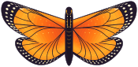
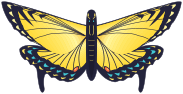

Вырезать и сложить
Монарх
Проследи за чёрными жилками до вытянутого кончика оранжевого крыла. При увеличении размаха растёт площадь крыльев, а длина корпуса сохраняется. На планирование влияют скорость, угол крыла и вес. Испытай два размаха и отметь места посадки.
Открыть мастерскую
Что понадобится
Печатный шаблон, ножницы, линейка и маленькая скрепка с закруглённым концом
Напечатай шаблон (K1)
Печатай в масштабе 100% («Фактический размер») и проверь линейкой отметку 50 мм.
Проверь в полёте
Сначала выровняй оба язычка. Для второй серии немного подними один. С какой стороны окажется больше первых касаний?
Другие варианты сгиба
Крылья с язычками (W1)
Подогнутая передняя кромка (K2)
Экспериментальная K2. Возьми бумагу 120 г/м² и две скрепки по 33 мм. Сравнение с K1 в полёте ещё предстоит.
Посмотреть другие модели
-

Голубой морфо
Вырезать и сложить
-

Махаон
Вырезать и сложить